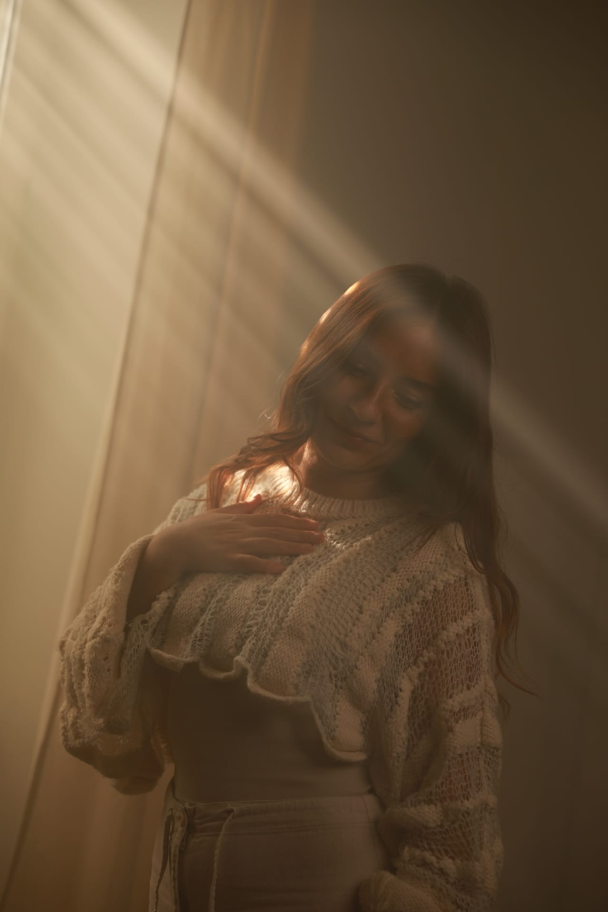
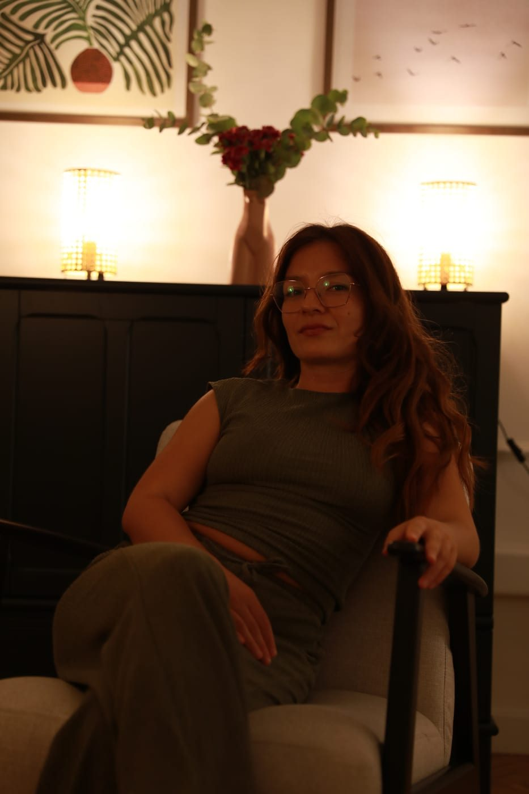
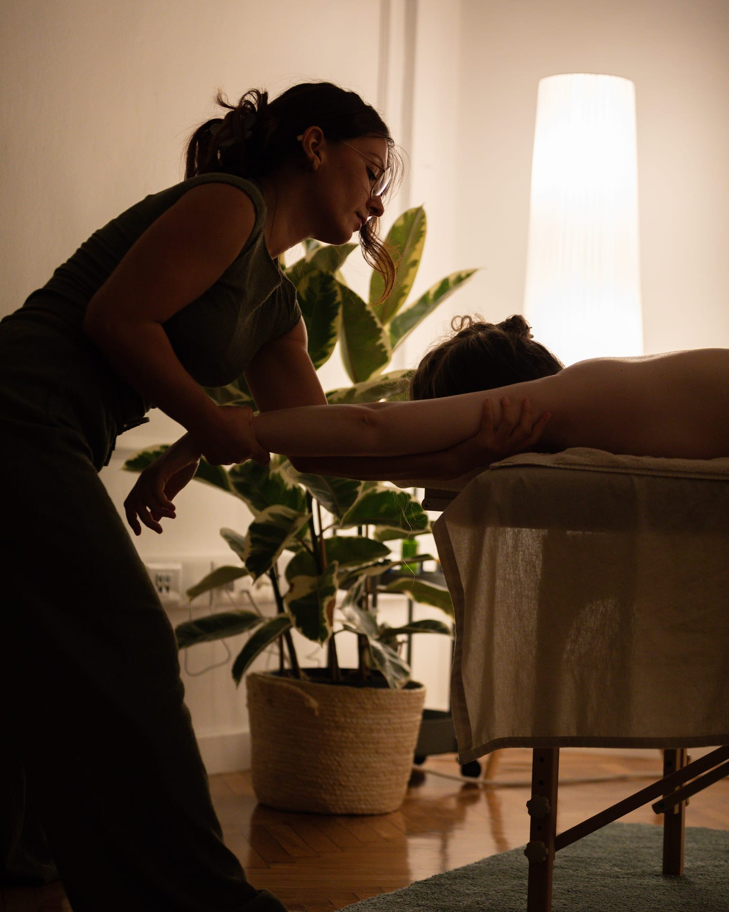

Touch as a form of communication
Diana Lendić · Certified massage therapist · Split
my story
it began with movement
All my life I have been in love with movement. Dance, contortion and exploring what my own body could do were a big part of my life. Back then I believed that meant I was connected to my body. I thought I knew it because through it I could dance, create and explore movement.

For a long time I thought I knew my body. Only later did I begin to feel it.
the body is not just a tool, it is where we live
Only later did I realise there is a completely different relationship with the body. One in which the body is not just a tool for movement but the place we live in. The place that holds my emotions, memories, boundaries, sadness, joy and sense of safety.
When I first heard about body-oriented psychotherapy, something drew me to it at once. It was a natural continuation of my interest in the body and the mind, yet right at the start of working on myself I realised how superficial my connection to my body had actually been.
when I let go of control
In therapy it took me a long time to allow touch. I avoided it and felt uneasy. I grew up with an experience in which touch was often rough and hurtful, so my body needed time to believe that a different kind of contact could exist.
One moment I remember especially. For the first time I managed to let go of control and let the therapist support me through touch. Lying on the floor, I felt my body slowly relax, my weight give itself to the ground and my mind no longer having to keep everything under control. It felt like floating calmly on the surface of the sea, but this time I was not alone. Another present human being was beside me.
That experience changed the way I see touch.

I want every woman to feel that here she does not have to be good, tough or always in control.

from therapy to touch
Later, during three years of training in body-oriented psychotherapy, I began to understand why that moment mattered so much. I learned about early development, attachment, the nervous system and co-regulation, and came to see more and more how many experiences from our earliest years remain written in our bodies. How much of what we now put down to stress or character actually has far deeper roots.
After several years of my own therapy and three years of training in body-oriented psychotherapy, I wanted to deepen my understanding of the body through touch. I enrolled in massage school and later continued training in various courses and manual techniques. Each of them enriched the way I work, but what mattered most to me from the beginning has not changed: creating a space in which a person can feel safe, seen and in touch with themselves.
how I work today
Today I see touch as a form of communication. I believe bodies talk to each other even before we say a single word. Sometimes touch can convey what is hard to explain in words: that we are seen, supported, that we do not have to prove anything and that we can rest for a moment.
In my work I want every woman to feel that here she does not have to be “good”, tough or always in control. I want her to feel safe, to be free to say what suits her and what does not, and for her body to get the attention it may not have had in a long time.
Today I work exactly the way I wish someone had worked with me many years ago. With full presence, respect for boundaries and trust that the body knows its own rhythm when we give it enough time, attention and a safe space.
see the rituals